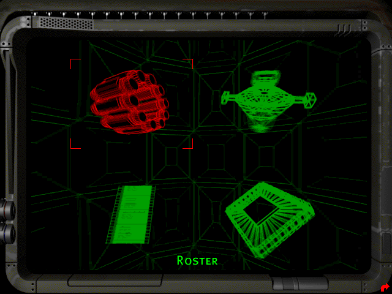
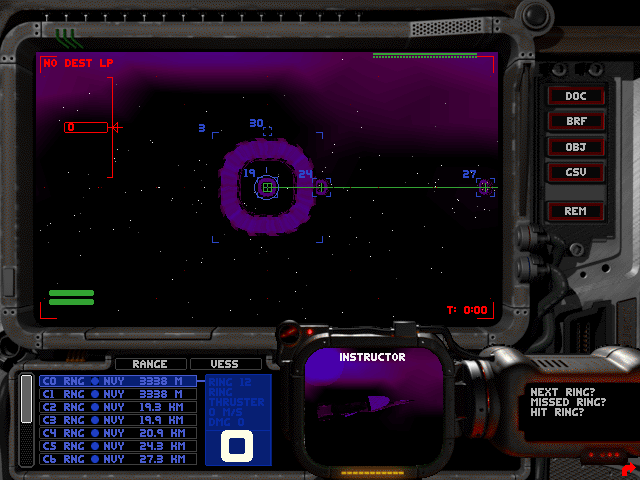
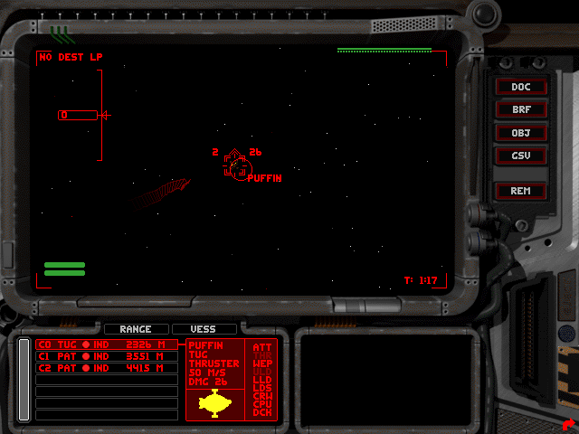

名稱：星海梟雄1／獨立戰爭1 (Independence War: The Starship Simulator／I-War，英文版)
簡介：Particle 1997年出品的太空飛行戰鬥模擬遊戲，由Infogrames代理發行。1999年推出
「反抗（Defiance）」資料片，但基於銷售考量，並未獨立銷售，而是和主程式光碟
包裝一起，以豪華版（Deluxe）或特別版（Special）發行。台灣由英特衛代理進口，
並以「星海梟雄」名稱銷售 [待補]。



保護：光碟
備註：英特衛代理版為1999/9/28版，國外版多為1999/7/31版。CD4即為資料片，需另行安裝。
備註：剩餘記憶體（含虛擬記憶體）不可超過2GB，否則會被誤判記憶體不足而無法執行。可
進行下列修正（只看實體記憶體，不計算虛擬記憶體）：
IWar.exe, IWDE.exe
8B 45 EC 03 45 F4
-- -- -- 90 90 90
備註：IWar.exe執行時，後面可接參數-b -16 -800x600，即可以3Dfx 800x600模式執行（若
未指定800x600，內定為640x480。
操作：Shift-Q = 結束遊戲